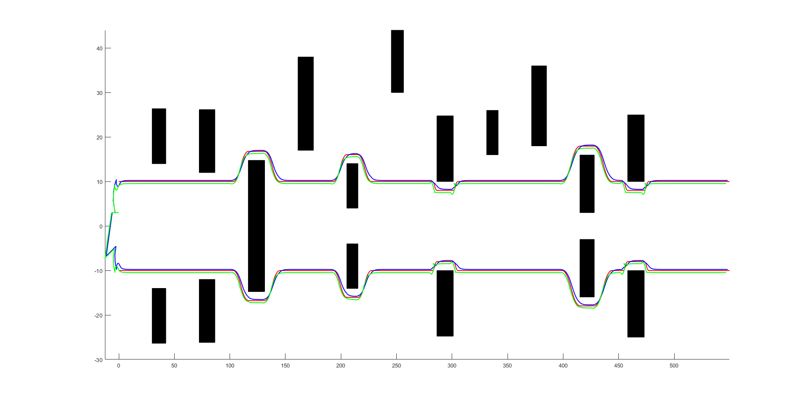
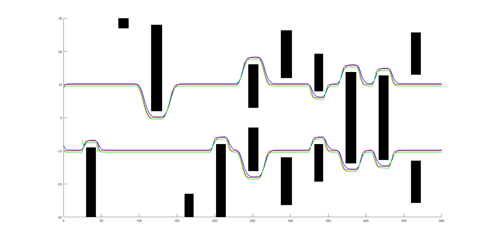

Leader-Follower Formation Control with MPC
Project Overview
This project implements a centralized leader-follower formation control system using Model Predictive Control (MPC) in MATLAB...
Demonstration
The video below demonstrates how follower robots maintain coordinated formation using MPC...
The figures below show the complete motion trajectories of the robot team after executing formation control...


Core Techniques
- ✓ Designed a centralized MPC framework for real-time formation control
- ✓ Encoded formation geometry and tracking objectives into the cost function
- ✓ Integrated collision avoidance using inter-agent and obstacle constraints
- ✓ Verified system stability through simulation in MATLAB under complex scenarios